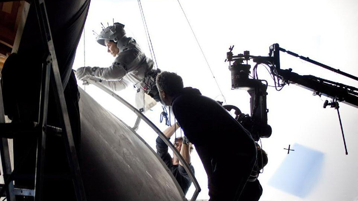

Detras de Camaras
-
¿Cómo hicieron Gravity?
Hasta hace poco, el equipo de Gravity no había revelado suficiente información sobre los esfuerzos monumentales necesarios para realizar esta película. Afortunadamente, la Academia de Artes y Ciencias Cinematográficas (AMPAS) de los Estados Unidos, organizó el evento “Deconstructing Gravity”, en el que se abordaron los aspectos técnicos de la película. Los participantes fueron Tim Webber, supervisor de efectos visuales ganador del Oscar; Mark Sanger, editor ganador del Oscar; Max Solomon, supervisor de animación ganador del Oscar; y Cady Coleman, el astronauta que asesoró a Sandra Bullock para su papel.
 -
Realizaron la película tres veces (por lo menos).
¿Te preguntas qué significa “pre-vis” en el párrafo anterior? “Pre-vis” es un diminutivo de las previsualizaciones utilizadas por el equipo de Gravity para planear la película antes de filmar. Crearon videos animados para saber cuándo deberían suceder las cosas en pantalla, y estos videos fueron utilizados durante la producción y luego durante la edición. Pero, cuando había algún cambio imprevisto durante la producción (o durante la edición), este cambio también se tenía que reflejar en los “pre-vis”. Existen tres versiones de Gravity considerando los “pre-vis”, los dailies (el material de cada día de filmación) y el corte final, pero hay cientos de versiones más que podrían ser extraídas del material que fue descartado en el camino.

-
La caja de luz.
El equipo de Gravity utilizó lo que ellos llaman una caja de luz para iluminar a los actores de la misma manera en la que serían iluminados en el espacio. Construyeron paneles con más de dos millones de luces LED para rodear a Bullock y los colocaron en un espacio que apodaron “la jaula de Sandy”. La idea de utilizar paneles de LEDs se le ocurrió a Emmanuel Lubezki en un concierto de rock.

-
Si tuviera que describir esta pelicula sonaria horrible y nadie iria a verla.
pero eso es porque no poseo el vocabulario y la capacidad descriptiva necesarios para que suene tan bonito como es, tan asombroso, aterrador y emocionante como es.~Sandra Bullock

-
Que opina George Clooney
cuando el publico vea la pelicula entendera que su tecnologia y la forma de rodar cambiaran siempre este negocio. asi de buena es...